タイトル写真
| Peru | 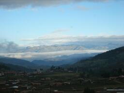 |
| Fiji | 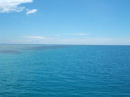 |
| 鎌倉 | 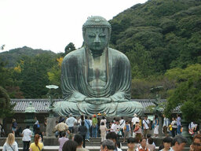 |
| 牛久大仏 | 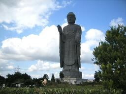 |
| 日光東照宮 | 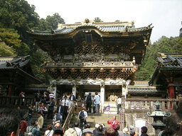 |
| 中禅寺湖 | 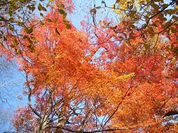 |
| 琵琶湖 | 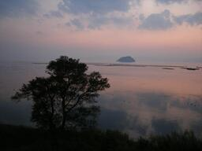 |
| 南房 | 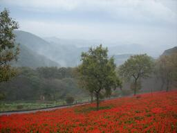 |
| 塔ノ岳 | 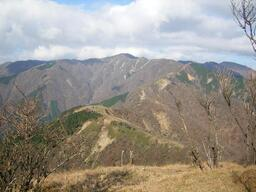 |
| 杓子山 | 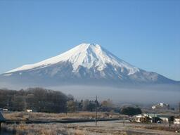 |
| 秩父御岳山 | 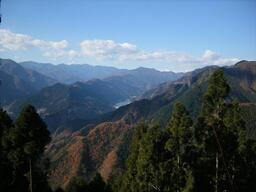 |
| 足和田山 | 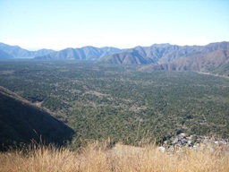 |
| 伊豆ヶ岳 | 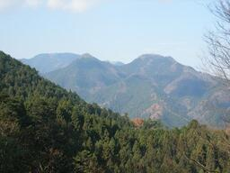 |
| 浅間嶺 | 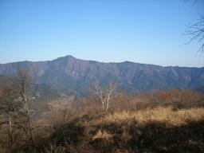 |
| 棒ノ折山 | 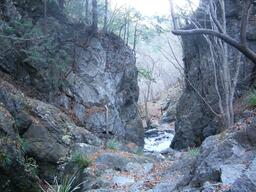 |
| 龍王山 | 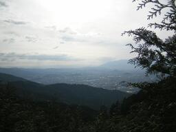 |
| 比叡山 | 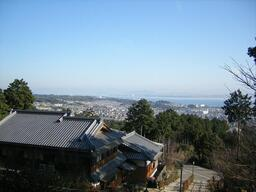 |
| 高川山 | 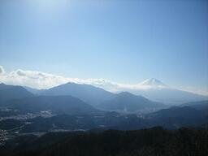 |
| 官ノ倉山 | 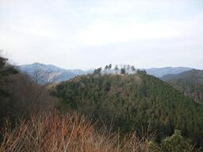 |
| 生藤山 | 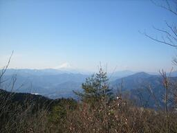 |
| 倉岳山 | 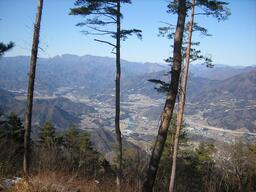 |
| 甲州高尾山 | 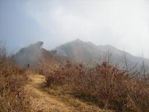 |
| 荒船山 | 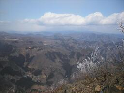 |
| 伊予ヶ岳・富山 | 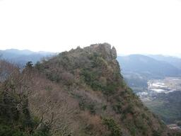 |
| 毛無山 | 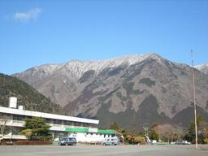 |
| 弘法山 | 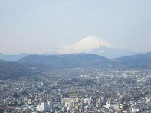 |
| 三頭山 | 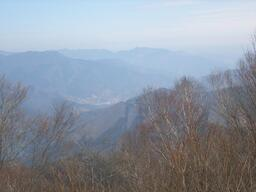 |
| 大山三峰山 | 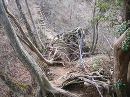 |
| 三ツ峠山 | 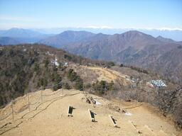 |
| 武甲山 | 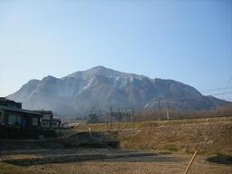 |
| 日向山 | 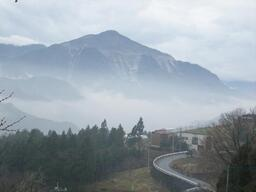 |
| 等々力公園 | 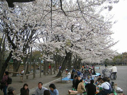 |
| 高水三山 | 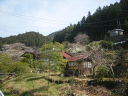 |
| 檜洞丸 | 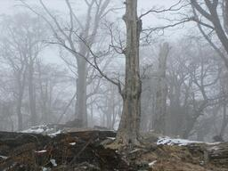 |
| 明神ヶ岳 | 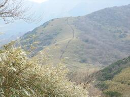 |
| 黒斑山 | 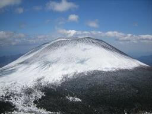 |
| 大山 | 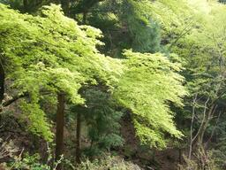 |
| 裏妙義 | 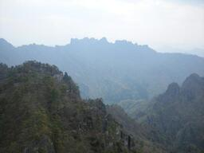 |
| U.S.A. | 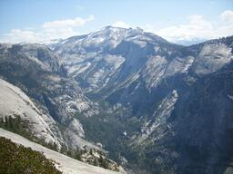 |
| 大菩薩嶺 | 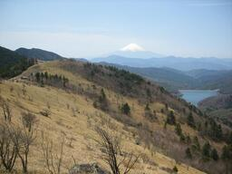 |
| 乾徳山 | 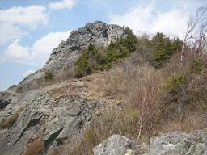 |
| 愛鷹山 | 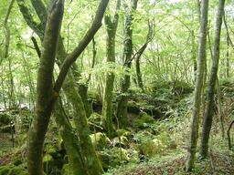 |
| 雲取山 | 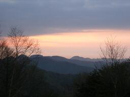 |
| 那須岳 | 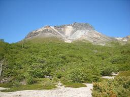 |
| 川苔山 | 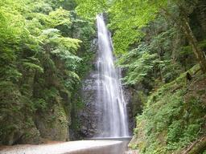 |
| 首里城 | 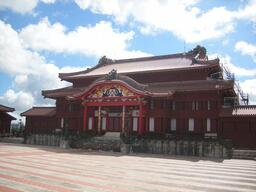 |
| 鶴ヶ鳥屋山 | 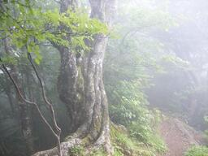 |
| 九鬼山 | 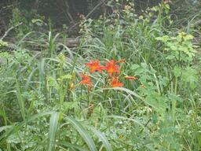 |
| 両神山 | 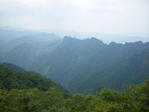 |
| 槍ヶ岳 | 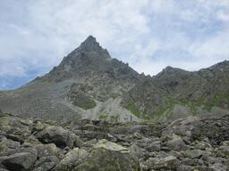 |
| 不帰キレット | |
| 沖縄 | |
| 天城山 | |
| 小野子山 | |
| Egypt | |
| 白峰三山 | |
| 朝日岳 | |
| 立山 | |
| 二子山 | |
| 至仏山 | |
| 蓼科山 | |
| 生藤山 | |
| 小楢山 | |
| 鐘ヶ嶽 | |
| 南高尾山稜 | |
| 丹沢主脈 | |
| 鎌倉アルプス | |
| 滝子山 | |
| 長九郎山 | |
| 高尾山 | |
| 天狗山～男山 | |
| 大神神社 | |
| 太神山 | |
| 鹿岳 |  |
| 大岳山 | |
| 発端丈山 | |
| 大霧山 | |
| 二十六夜山 | |
| 神山～箱根駒ヶ岳 | |
| 岩殿山 | |
| 御荷鉾山 | |
| 鋸山 | |
| 四阿屋山 | |
| 仏果山 | |
| 高ドッキョウ | |
| 権現山 | |
| 北高尾山稜 | |
| 武奈ヶ岳 | |
| 突先山～ダイラボウ | |
| 武川岳 | |
| 妙義山 | |
| 吾妻山～鳴神山 | |
| 弘法山 | |
| 古賀志山 | |
| 御前山 | |
| 裏妙義 | |
| Thailand | |
| 鐘撞堂山 | |
| 赤鞍ヶ岳 | |
| 鷹ノ巣山 | |
| 山伏 | |
| 御座山 | |
| 二子山 | |
| 社山 | |
| 雲取山 敗退 | |
| 大岳山 | |
| 燧ヶ岳 | |
| 鳥海山・蔵王山 | |
| 燕岳 | |
| 甲武信ヶ岳 | |
| 越後三山 | |
| 有間山 | |
| 穂高岳 撤退 |  |
| 吾妻山 | |
| 頸城三山 | |
| Spain | |
| 御嶽山 | |
| 両神山 | |
| 陣馬山 |  |
| 鍋割山 | |
| 大無間山 |  |
| 高川山 | |
| 塔ノ岳 | |
| 奥多摩三山 | |
| 迦葉山 | |
| 大野山 | |
| 明神ヶ岳 | |
| 高尾山 | |
| 高柄山 | |
| 鷹取山 | |
| 妙光寺山 | |
| 鶏冠山～竜王山 | |
| 多神社 | |
| 弘法山 | |
| 奥多摩ロッジ | |
| 御坂黒岳 | |
| 筑波山 |  |
| 塔ノ岳 | |
| 丸山 | |
| 北八ヶ岳スノーシュー | |
| 鳴虫山 | |
| 鍬柄岳～大桁山 | |
| 弁天山 | |
| 長者ヶ岳～天子ヶ岳 | |
| 戸倉三山 | |
| 鼻曲山 | |
| 幕山 | |
| 岩殿山 | |
| 天覧山～大高山 | |
| 猫魔平スノーシュー | |
| 秩父槍ヶ岳 | |
| 篠井山 | |
| 弘法山 | |
| 鍬ノ峰 | |
| 城山 | |
| 十枚山 | |
| 笹子雁ヶ腹摺山 | |
| 石裂山・岩山 | |
| 太郎山 | |
| 西丹沢キャンプ | |
| 矢倉岳 | |
| 南ア深南部縦走 | |
| 大菩薩連嶺 | |
| 高宕山 | |
| 大室山 | |
| 日向山 | |
| 三国山 |  |
| 本社ヶ丸～三ツ峠山 | |
| 丹沢主稜 | |
| 男体山・武尊山 | |
| 生藤山 | |
| 巻機山 | |
| 荒川岳 | |
| 大室山 | |
| 背戸峨廊 | |
| 穂高槍縦走 | |
| 大雪・十勝連峰縦走 | |
| 御岳山 | |
| 御神楽岳 | |
| 鼻曲山～角落山 | |
| 有明山 | |
| 常念山脈縦走 | |
| 苗場山 | |
| シダンゴ山 | |
| 鹿島槍ヶ岳 | |
| 女峰山 | |
| 榛名山 | |
| 鶴寝山 | |
| 大ナゲシ | |
| 谷川岳 | |
| 奥多摩ロッジ | |
| 乾徳山 | |
| 古峰原～横根山 | |
| 金時山 | |
| 毛無岩～立岩 |  |
| 編笠山 | |
| 高尾山 | |
| 塔ノ岳 | |
| 城峯山 | |
| 杓子山 | |
| 薬師寺 | |
| 矢倉岳 | |
| 稲包山 敗退 |  |
| 鍋割山 | |
| 吾妻耶山 | |
| 池上梅園 | |
| 若潮マラソン | |
| 沼津アルプス | |
| 関八州見晴台 | |
| 東京タワー | |
| 仏果山 | |
| 乗鞍高原スノーシュー | |
| 百蔵山～扇山 | |
| 不老山 | |
| 石尊山～仙人ヶ岳 | |
| 弘法山 | |
| 大野山～日影山～シダンゴ山 | |
| 浜離宮恩賜庭園 |  |
| 笠丸山 | |
| 倉岳山 | |
| 和名倉山 | |
| 会津駒ヶ岳 |  |
| 大山 | |
| 赤岩尾根 | |
| 大楠山 | |
| 薬師岳～夕日岳～地蔵岳 | |
| 上高地 | |
| 源次郎沢 | |
| 海沢探勝路 | |
| 畦ヶ丸 | |
| Canada | |
| 四阿山 | |
| 高尾山 | |
| 横浜観光 | |
| 平城宮跡 | |
| 南アルプス南部縦走 | |
| 石老山 | |
| 日本橋 | |
| 日和田山 | |
| 金時山 | |
| 愛鷹連峰縦走 |  |
| 矢平山 | |
| 稲含山 |  |
| 棒ノ折山 | |
| 後楽園 | |
| 鹿児島旅行（開聞岳） | |
| 高尾山 | |
| 笹尾根 | |
| 川崎大師 | |
| 興福寺・春日大社 | |
| 金ピラ山 | |
| 宝塚 | |
| 鐘ヶ嶽 | |
| 白駒池・霧ヶ峰・美ヶ原旅行 | |
| 妙義山・荒船山・篭ノ登山 | |
| 西沢渓谷 | |
| 三浦富士 | |
| 茅ヶ岳 | |
| 子持山・榛名山 | |
| 大山 | |
| 九鬼山 | |
| 武甲山～大持山 | |
| 鋸山 | |
| 橿原神宮 | |
| 岡寺 | |
| 幕山 | |
| 御殿山・伊予ヶ岳・嵯峨山 | |
| 菜畑山 | |
| 高麗山 | |
| 身延山 | |
| 飯盛山 | |
| 蕨山 | |
| 弘法山 | |
| 太平山～晃石山・三毳山 |  |
| 上州三峰山 | |
| 梅ヶ島温泉旅行（山伏・大光山） | |
| 烏帽子岳 | |
| 三ツ峠山 | |
| 平標山 | |
| 辺室山～鍋嵐～宮ヶ瀬尾根 | |
| 大室山 | |
| 日光白根山 | |
| 瑞牆山 | |
| 櫛形山 | |
| 神山～箱根駒ヶ岳 | |
| 嵩山・白砂山 | |
| 北信州旅行（唐松岳・戸隠山） | |
| 天狗岳 | |
| 松島 | |
| 富士山大沢崩れ | |
| 巻機山 | |
| 笠取山 | |
| 金峰山 | |
| 諏訪山 |  |
| 大山 | |
| 浅間隠山 | |
| 兼六園 | |
| 小田原城 | |
| 白山 | |
| 桜山 | |
| 日向山 | |
| 陣馬山 | |
| 談山神社・聖林寺 | |
| 日枝神社 | |
| 景信山 | |
| 高塚山 | |
| 達磨山 | |
| 鳥ノ胸山 | |
| 鉄砲木ノ頭～三国山 | |
| 北茨城旅行（八溝山・奥久慈男体山・竪破山） | |
| 南山 | |
| 二子山 | |
| 高尾山 | |
| 高尾山 |  |
| しながわ水族館 | |
| 羽田空港 | |
| 那須キャンプ（那須岳） | |
| 竜門峡 | |
| 蓼科山・鉢伏山 | |
| 湯ノ丸山 | |
| 志賀山・草津白根山 | |
| 大山 | |
| 金時山 | |
| 加波山 | |
| 三頭山 | |
| 御岳昇仙峡 | |
| 辺室山 | |
| 桜山 | |
| 高尾山 | |
| 鎌倉アルプス | |
| 静岡・伊勢旅行 |  |
| 石上神宮 | |
| 房の大山 | |
| 景信山 | |
| 上野動物園 | |
| 横浜ランドマークタワー | |
| 渋沢丘陵 |  |
| ソレイユの丘 | |
| 幕山 | |
| 城ヶ島 | |
| 岳ノ台 | |
| 高宕山 | |
| 新潟旅行（坂戸山） | |
| 十二ヶ岳～節刀ヶ岳 | |
| 備前楯山 | |
| 小浅間山 | |
| 高尾山 | |
| 北奥千丈岳～国師ヶ岳 | |
| 滋賀・岐阜旅行 | |
| 江の島 | |
| 雁ヶ腹摺山 | |
| 小沢岳 | |
| 入笠山 | |
| 鶏冠山～甲武信ヶ岳 | |
| 安達太良山・東吾妻山 | |
| 釈迦ヶ岳 | |
| 足利行道山 | |
| 八景島シーパラダイス | |
| 岩殿山 | |
| 石割山 | |
| 四国旅行 | |
| 法隆寺 | |
| 酉谷山 | |
| 烏場山 | |
| こどもの国 | |
| 城ヶ崎海岸 | |
| 宝登山 |  |
| 岩戸山 | |
| 金沢動物園 | |
| 筑波山 | |
| 源氏山 | |
| 弘法山 |  |
| 大蔵運動公園 | |
| 大小山 | |
| 一ノ倉沢 | |
| 権現山～ミツバ岳 | |
| 高山旅行（位山） | |
| 荒山 | |
| 荒崎海岸 | |
| 生藤山 | |
| 子ども夢パーク | |
| 甘利山～千頭星山 | |
| 荒崎海岸 | |
| 赤城山 | |
| 荒崎海岸 | |
| 和田浦海水浴場 | |
| 大菩薩嶺 |  |
| 長野旅行（木曽駒ヶ岳・御在所岳） | |
| 陣馬山 | |
| 宝永山 | |
| 青森旅行（八甲田山） | |
| 笹子雁ヶ腹摺山～大沢山 | |
| 三頭山 | |
| 黒川鶏冠山 | |
| 南天山 | |
| 御堂山 | |
| シダンゴ山 | |
| 高尾山 | |
| アンパンマンミュージアム | |
| 竜ヶ岳 | |
| 東大寺 | |
| 水沢山 | |
| 大蔵運動公園 | |
| 源氏山 | |
| 相模原麻溝公園 | |
| 鋸山 | |
| 高尾山 | |
| 堂平山～笠山 | |
| 岩山 | |
| 三ツ岩岳 |  |
| 愛鷹山 | |
| 大杉山 | |
| 伊豆大島旅行（三原山） | |
| 荒崎海岸 | |
| 戦場ヶ原 | |
| こどもの国 | |
| 長七郎山 | |
| 秦野戸川公園 |  |
| 中川川 |  |
| しながわ水族館 | |
| 太刀岡山 | |
| 荒崎海岸 | |
| 乗鞍旅行（美ヶ原・乗鞍岳） | |
| 大台ヶ原山 | |
| 羽田空港 | |
| 浅間山 | |
| 高尾山～城山 | |
| ズーラシア | |
| 高谷山 |  |
| 大蔵運動公園 |  |
| 鹿俣山 | |
| 黒滝山 | |
| 相模原麻溝公園 | |
| 破風山 | |
| 室生寺 | |
| 池の平スノーパーク | |
| 吾国山 | |
| カムイみさかスキー場 | |
| 幕山 |  |
| あいかわ公園 | |
| ソレイユの丘 | |
| 清澄山 | |
| スノータウンYeti | |
| 丸山 | |
| 笠丸山 | |
| 藤子・F・不二雄ミュージアム | |
| たんばらスノーパーク | |
| 宮城旅行（泉ヶ岳） | |
| 大山 | |
| 荒崎海岸 | |
| 三方分山～パノラマ台 | |
| 篭ノ登山 | |
| 秦野戸川公園 | |
| 荒崎海岸 | |
| 清水公園 | |
| 昭和記念公園レインボープール | |
| 谷川岳 | |
| 鈴ヶ岳 | |
| 甲州高尾山 | |
| 伊豆ヶ岳 | |
| ギャラクシティ | |
| 小楢山 | |
| 桧沢岳 | |
| 明神ヶ岳 | |
| ユガテ～スカリ山 | |
| 日の出山 | |
| 晴海展望台 | |
| 唐招提寺 | |
| 城山 | |
| 白樺高原国際スキー場 | |
| 富山 | |
| 本所防災館 | |
| カムイみさかスキー場 | |
| グランディ羽鳥湖スキーリゾート | |
| 横浜クルージング | |
| 棒ノ折山 | |
| 赤久縄山 | |
| 根本山～熊鷹山 | |
| 木曽旅行（南木曽岳） | |
| 三菱みなとみらい技術館 | |
| 日和田山 | |
| 高原山 | |
| 大和ゆとりの森 | |
| 荒崎海岸 | |
| 御座山 | |
| 道志川 | |
| カップヌードルミュージアム | |
| 荒崎海岸 | |
| 桐の木平キャンプ場 | |
| 三嶋大祭り | |
| 昭和記念公園レインボープール | |
| 日光白根山 | |
| 御坂黒岳 | |
| 磐梯山・猫魔ヶ岳 | |
| 流石山～三倉山 |  |
| 鬼ヶ岳 | |
| 赤岳 | |
| フィールドアスレチック横浜つくし野コース | |
| 御前山 | |
| 鷹取山 | |
| 御前山～菊花山 | |
| 海龍王寺・法華寺 |  |
| よみうりランド | |
| 津森山～人骨山 | |
| 蓑山 | |
| グランディ羽鳥湖スキーリゾート | |
| 秋山二十六夜山 | |
| しらかば2in1スキー場・ピラタス蓼科スノーリゾート | |
| 雪入山 | |
| 唐沢山～諏訪岳 | |
| アクアパーク品川 | |
| 浜石岳 | |
| 兜山 | |
| 鹿岳 | |
| 四国旅行（石鎚山・西赤石山） | |
| 荒崎海岸 | |
| 鍋割山 | |
| 昭和記念公園レインボープール | |
| 荒崎海岸 | |
| 志賀高原旅行（笠ヶ岳・赤石山） | |
| 道志川 | |
| 尾白川渓谷 | |
| 茶臼山 | |
| 地蔵岳 | |
| 大栃山 | |
| 七ツ石山 | |
| 曲岳～黒富士 | |
| 城山～高尾山 | |
| 秩父御岳山 | |
| 多神社 | |
| 薬師寺 | |
| 宝篋山 | |
| 玄岳 | |
| 白樺高原国際スキー場・車山高原スキー場 | |
| ハンターマウンテン塩原・エーデルワイススキーリゾート | |
| 倉岳山 | |
| 元清澄山 | |
| 赤雪山～仙人ヶ岳 |  |
| 立処山撤退 | |
| 矢倉岳 | |
| 畦ヶ丸 | |
| 大菩薩峠 | |
| 等々力渓谷 | |
| 銚子 | |
| 飯綱高原旅行（飯縄山・黒姫山） | |
| 荒崎海岸 | |
| 黒斑山 | |
| 塔ノ岳 | |
| 菰釣山 | |
| 恵那山 | |
| 鹿倉山 | |
| 横尾山 | |
| 角間山～湯ノ丸山 | |
| 大山三峰山 | |
| 御場山 |  |
| 毛無山 | |
| 川苔山 | |
| 貫ヶ岳 | |
| 岩櫃山 | |
| 御正体山 |  |
| 景信山～陣馬山 | |
| 大野山 | |
| 鉄砲木ノ頭 | |
| 白馬五竜スキー場・白馬八方尾根スキー場 | |
| 八経ヶ岳・三峰山 | |
| 明神ヶ岳 | |
| 南高尾山稜 | |
| 男抱山 | |
| 立処山 | |
| 帯那山 | |
| 谷急山 | |
| 三ツ峠山 | |
| 六ツ石山 | |
| 伊豆旅行 | |
| 岩手・秋田旅行 | |
| 男体山 | |
| 編笠山 | |
| 石尊山 | |
| 吾妻小富士・安達太良山 | |
| 熊倉山 | |
| 檜洞丸 | |
| 日連アルプス | |
| 長谷寺 | |
| 富士見岳 | |
| 寄ロウバイ園 | |
| 青梅丘陵～赤ぼっこ山 | |
| 三峰山 | |
| 扇山～権現山 | |
| 茶臼山 | |
| 清水公園 |  |
| 長野旅行 | |
| 伯耆大山・蒜山 | |
| 高川山 | |
| 日留賀岳 | |
| 乾徳山 | |
| 荒崎海岸 | |
| 本社ヶ丸 | |
| 西穂高岳独標 | |
| 両神山 | |
| 浅間山 | |
| 王岳 | |
| 浅間嶺 | |
| 天祖山 | |
| 東大寺 | |
| 太田金山 | |
| 上越国際スキー場 | |
| ブランシュたかやま・ピラタス蓼科スノーリゾート | |
| 雨巻山 | |
| 荒船山 | |
| 明治神宮 | |
| 天城山 | |
| 物語山 |  |
| 武川岳～大持山 | |
| 守屋山 | |
| 御前ヶ遊窟 | |
| 赤薙山～女峰山 | |
| 尾瀬笠ヶ岳 | |
| 鷲羽岳～水晶岳 | |
| 大山～天丸山～帳付山 | |
| 橿原神宮 | |
| 関八州見晴台～越上山 | |
| 苗場スキー場 | |
| 蕎麦粒山～天目山 | |
| グランディ羽鳥湖スキーリゾート | |
| 両崖山～大岩山 |  |
| 大岩～碧岩 | |
| 中倉山～沢入山 | |
| 新潟旅行（粟ヶ岳・弥彦山） | |
| 戸神山・鉱石山・至仏山～尾瀬ヶ原 | |
| 丹後山～中ノ岳 | |
| 東京スカイツリー | |
| 霧ヶ峰 | |
| 東京サマーランド | |
| 九鬼山 | |
| 妙法ヶ岳 | |
| 東京ディズニーランド | |
| 高岩 | |
| 杓子山 | |
| 鶏岳・毘沙門山 | |
| 大神神社 | |
| 石尊山～麻綿原高原 | |
| 平和の森公園アスレチック | |
| 苗場スキー場・かぐらスキー場 | |
| 大蔵経寺山～要害山 | |
| 突先山～高山 | |
| 曽我丘陵 |